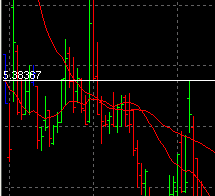
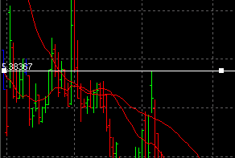
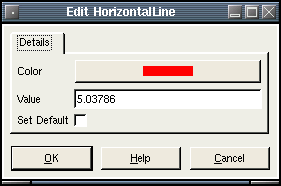

HorizontalLine
Description:
A horizontal line the extends the width of the
chart area.

To create a HorizontalLine, select draw mode from the main toolbar
and
right click with the mouse on the chart
you wish to apply it to. This can be either the main chart area or any
of the indicators that appear in the indicator chart area. Select "New
Chart Object" from the popup menu and select HorizontalLine from the
menu.
After selecting the menu option, the mouse
pointer will change
to a hand pointer. To place the HorizontalLine on the chart the user
must
click the left mouse button. The object
will then appear on the chart.
Selecting:
In order to edit the
HorizontalLine,
the user must first select it. First, the user must be in draw mode.
Select the HorizontalLine by left clicking with
the mouse anywhere on the line. The object will be selected when a
series of "grab boxes" appears just along it's length like this:

You
then can right click the mouse for a context menu. You
may also double-left click on the object to bring up the edit dialog
directly. There are
three options when a HorizontalLine is selected. Edit, Move and Delete.
Edit:
The horizontal line settings are defined as follows:
- Color - The color of the line.
- Value - The value point of placement on the chart.
- Set Default - If checked, all settings will default to the
current values when new ones are created.

Move:
To drag the HorizontalLine across the chart, click the left mouse
button on
any of the grab boxes. The HorizontalLine will then follow the mouse
pointer as it moves. To
drop the HorizontalLine, click the left mouse button.
Delete:
This will permanently delete the HorizontalLine from the chart.